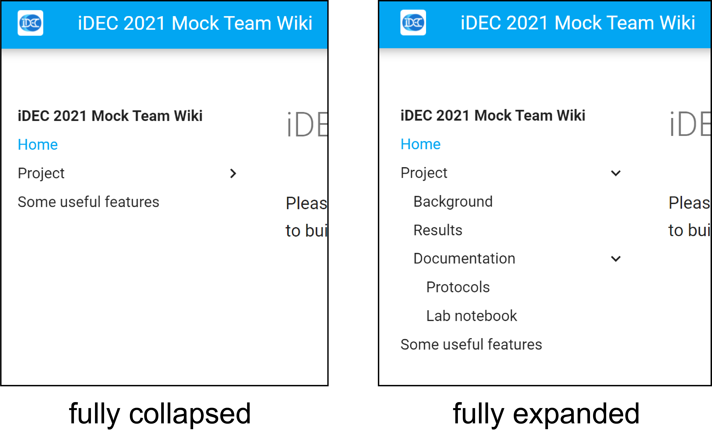

Common operations in MkDocs
In this section, please make sure you have the live server up and running.
You can refer to the previous page [Set up a Docker container for wiki editing] for the instructions.
This page covers the essential information you need to know to build your team wiki.
Configure the wiki name
The default wiki name we give our template repository is "iDEC HQ Team Wiki Example".
To change it to a new name, use a plain text editor to open the file:
mkdocs.yml
Look for the following configuration:
site_name: iDEC HQ Team Wiki Example
site_name: iDEC 2021 Mock Team Wiki
- browser tab title
- wiki header title
- wiki navigation bar header

Attention
It is possible to change the favicon and icon of the wiki in mkdocs.yml.
However, if your team decide to use MkDocs for Material, or other static site generators with templates, we politely request that your use the iDEC favicon and logo, and keep our copyright statement. This is to show that your team wiki is part of iDEC. Thank you.
Put pages on the navigation menu
If you click on the "Protocol" or the "Notebook" link in the navigation menu, you will land on to a 404 - Not found page.

We will fix this now. Using an IDE or a text editor, open the mkdocs.yml file.
Look for the following configuration:
nav:
- Home: index.md
- Background: background.md
- Results: results.md
- Protocols: protocols.md
- Lab notebook: notebook.md
- Some useful features: useful_features.md
Danger
Failure to follow the proper use of whitespaces in each list item will result in links not being properly rendered.
Comparing this section with the navigation menu, you can see that, for each indented list item, the key (text before colon :) is the link label, and the value (text after colon) corresponds to the file path, which is relative to the docs/ folder.
The files for "Protocols" and "Notebook" actually exist - they are just sitting in the directory docs/documentation/.
.
└─docs
└─documentation
├─notebook.md
└─protocols.md
mkdocs.yml file, nav section as follow:
nav:
- Home: index.md
- Background: background.md
- Results: results.md
- Protocols: documentation/protocols.md
- Lab notebook: documentation/notebook.md
- Some useful features: useful_features.md
Return to the browser and the links should now be functional.

Create subsections in the navigation menu
If you have a lot of pages, you might want to group them together.
In the nav section inside the mkdocs.yml file, make the following change:
nav:
- Home: index.md
- Project:
- Background: background.md
- Results: results.md
- Documentation:
- Protocols: documentation/protocols.md
- Lab notebook: documentation/notebook.md
- Some useful features: useful_features.md
Return to the browser. The menu should now have 3 levels, and can collapsed or expanded at different levels.

Two important things to note in mkdocs.yml:
- The subsection must have a header but without a file path1
- Under the subsection, the list item is indented to the right by exactly 4 whitespaces
Tip
Structuring your Markdown file locations and the navigation menu in the same way is highly recommended, since it will help your collaborators / teammates to find the location of the file much more easily.
Note
The structure here is only for the illustration of increasing page depth. In general, we recommend that teams limit their wiki page depth to only 2 levels.
You will also notice that for your assigned team repository, your 2nd level pages are grouped under section headers instead. That is because we enabled the feature Navigation Sections in mkdocs.yml, which is more user-friendly when the total number of pages is small.
Add an image
You will now add an image to the wiki, similar to how you would add figures for illustrations and results.
Save a dummy image under the directory docs/img and name it as dummy.png
Then, edit docs/results.md, and add the following code underneath the existing texts:
{ width=800px }
Return to the browser. You should now see the image being shown on the "Results" page.
While the size of the figure was 600 pixels x 400 pixels, on the page it is stretched to 800 pixels in width. You can modify the image size by the attributes tag2 after the normal Markdown syntax for image insertion.
Self-practice
Why not try creating a page called "Our Team", list your iDEC teammates and add their photos?
Generate links to downloadable contents
In some cases you might have some information that are simply too long to be part of a webpage. Instead of displaying its full content, you might want to generate a link to the downloadable file instead. This can be done by placing the file somewhere under the docs folder and then pointing a hyperlink to it.
Inspect the directory docs and you will see:
.
└──docs
├─documentation
│ ├─notebook.md
│ └─protocols.md
└─notebooks
├─MCLONE001.pdf
└─EVOLVE001.pdf
Assuming these are exported electronic notebook files, you will now create links to them on the page
"Project -> Documentation -> Notebook", or,
http://localhost:8000/documentation/notebook/
Use a text editor and open docs/notebook.md, then insert the following lines underneath the existing content:
- [MCLONE001: Plasmid construction for DE of GFP](../notebooks/MCLONE001.pdf){: target="_blank" }
- [EVOLVE001: Directed evolution on GFP](../notebooks/EVOLVE001.pdf){: target="_blank" }
So for the relative path ../notebooks/MCLONE001.pdf, it works as follow:
1. Starts from docs/documentation where notebook.md is located
2. ../ = goes up 1 level to docs
3. notebooks/MCLONE001.pdf = goes into the notebooks folder and locate the MCLONE001.pdf file.
This relative path will work both on your location machine as well as the deployed GitHub Pages.
Return to the browser and go to "Notebook" page, you will now find two links. Click on any of them and you should see a new tab with the PDF file showing up.
Tip
Upload your files in formats that are OS-agnostic and not dependent on proprietary software. For example, use PDF instead of Word documents or Powerpoint files.
Embed a video
Use of multimedia faciliates scientific communication to the lay public. To embed a video, use of HTML is necessary.
You already have a cover image in the repository.
Download a sample video from this link.
Then save the file as iDEC_video.mp4 under the docs/assets directory:
.
└──docs
├─assets
│ └─iDEC_video.mp4
└─img
└─video_cover.png
To embed this on the "Home" page, open a text editor, insert the following code into the end of the file docs/index.md and save the file.
<video controls width="600px" poster="img/video_cover.png">
<source src="assets/iDEC_video.mp4" type="video/mp4">
</video>
In the code above, the poster attribute in the <video> element has a relative path pointing to the cover image of the video.
The src attribute (which is a shorthand for "source") in the <source> element has a relative path pointing to the video itself.
Return to the browser and go to Home (localhost:8000), you will see the video being embedded.
Attention
Make sure each individual file (whether document or video) does not exceed 100 MB in size, which is the limit for hosting by GitHub. Also, you should keep the size of your repository within 1 GB.
-
Check out the Material for MkDocs reference on how to enable section index pages. This is however not recommended from a UX design perspective. ↩
-
Material for MkDocs reference on images ↩